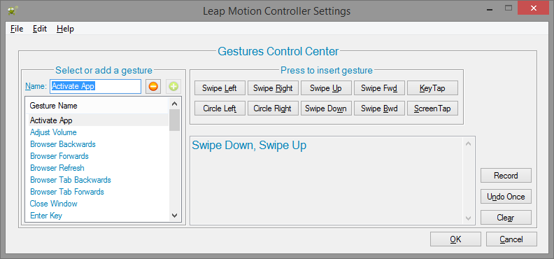
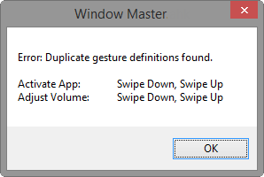
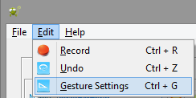
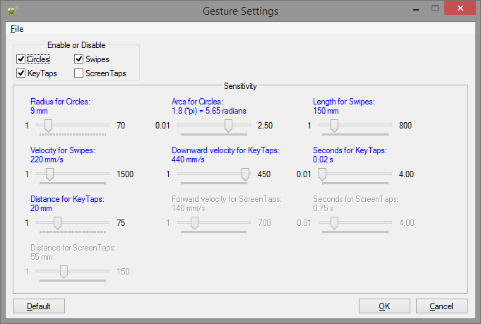

This dialog is a means to create gesture chains. On the left side are names which represent gesture chains. Notice the and
icons. These buttons will add and delete selected gestures.
To add a new gesture chain, focus the white edit field located to the right of Name. Next, name the chain. Finally, using the buttons beneath Press to insert gesture, build the desired gesture chain. Alternatively, the Record button may be used to build a chain. Interactively create the chain by performing gestures over the Leap Motion Controller.

Below are hotkeys which enable efficient navigation of the dialog. Note that you can navigate through the list of gestures while keep focus in the Name edit.
| Hotkey | Action |
|---|---|
| Alt + = | Adds a new gesture chain using the text entered in for Name |
| Alt + - | Deletes selected gesture chain |
| Delete | Deletes selected gesture chain |
| Up arrow | Moves selection up |
| Down arrow | Moves selection down |
| Page Up | Moves selection up one page |
| Page Down | Moves selection down one page |
To undo all changes, click the Cancel button. Changes are saved upon pressing the OK button; furthermore, all gesture chains are validated. If any chains conflict, an error message like the following will be displayed:
The Edit menu links to the Gesture Settings Dialog 
Gestures may be disabled or have their sensitivity adjusted through the Gesture Settings Dialog. Default settings are provided which were thoroughly tested and found to be optimal; however, as mentioned in this section, there are many variables which affect tracking. What is optimal for one user may not be optimal for another. Do not be afraid to tweak options to find the optimal point -- the Default button reverts settings to their pre-defined, optimal point.
